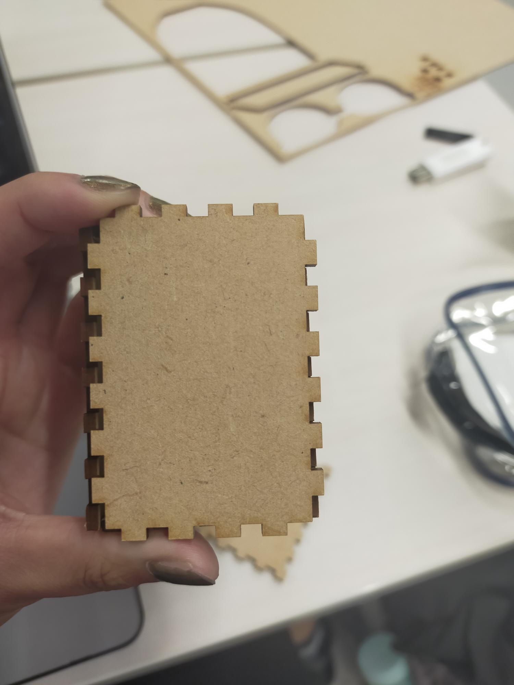

キモカワ① 捕食クリオネフォーク
説明
キモい生物をネットで検索していたところ、捕食時のクリオネ画像がヒットした。(ツノはバッカルコーンというらしい)触手の形を生かして何か作りたいと思い、フォークの形に応用できないかと考えた。
クリオネの可愛さと気持ち悪さをデザインに落としこみたかった。
(2021/11/2)DXLファイルが破損していたのか、出力に失敗したのでデータを新しく作り直した。
＜画像＞ 準備中 これであなたもクリオネのように豪快に食べられるかも。
＜参考サイト＞
雑学カンパニー クリオネの食事シーンが怖すぎる。悪魔かよ…！【動画】（外部サイト）
キモカワ② カピバラおじさんブックストッパー
説明
どうしたらキモいデザインにできるかネットを検索していたところ、動物に人間の生足が生えた画像がヒットした。キモい生足→おじさんを連想し、そこから最近テレビで見た温泉に入るおじさんのようなカピバラを思い出した。
「ぱっと見可愛いけれど、実は気持ちわるい」作品にする方法を探していたところ、ちょうど教科書や楽譜を挟むブックストッパーが欲しかったので
「本で隠れている分には可愛いけれど、開くとキモい」作品として応用できるのではと思った。
一回目：失敗
口の部分の線（彫刻）をadobe illustlatorで黒線に指定できていなかったので、
勉強しているとこいつの視線が痛い。
やらなきゃいけないのはわかってるんだよ…！
＜課題＞
約5cm×5cmで作ったら、薄い本なら挟めるが、分厚い本は挟めなかった。
＜参考サイト＞
懐かしカワイイ ランドセル型小箱
説明
懐かしいものを探していたら、デパートのランドセル売り場を見て、をテーマに何か作りたいと思った。小さいサイズにすれば、素材の質感も生かしつつコロッとした可愛さも表現できると思い、小箱を作ることにした。
素材を曲げたり、組み合わせる事もやってみたかったので、いい練習になると思った。
一回目[失敗]
敗因１：
アイデアを思いついてからノリと勢いでスケッチを起こしたら、噛み合わせ分の計算ミスで板がはまらないことがわかった(反省)(たまによくやらかす)
ノリと勢いと過信は失敗する可能性が高いので、皆さんにはちゃんと計算してから出力する事をお勧めする。

敗因２：
板の切り込みが短過ぎて全然曲がらなかった（レーザーで線を刻むのみ）。隣で作業していた方の出力物を見せてもらったところ、切り込みが大きい方がよく曲がることがわかった。
＜画像＞
準備中
-
あの頃のあいつらは生きているんだろうか。私のランドセルには楽しくも苦い思い出が詰まっている。
前の画面に戻る